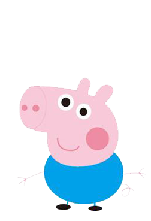

穿梭时间的画面的钟
从反方向开始移动
回到你爱你的时空
停格内容不忠
所有回忆对着我进攻 我的全部被你拆
誓言太沉重被纵容 怒吼怒吼失控
我是加粗的文字
我是倾斜的文字
我是删除的文字
我是下划线标签

alt 替换文本 图像显示不出来的时候用文字替换：

title 提示文本 鼠标放到图片上时提示的文字
width:给图像设置宽度, height:给图片设置高度(一般只修改一个，另一个会随之等比例改变)
border 给图像设定边框

1.外部链接
target:打开窗口的方式 默认的是_self当前窗口打开 _blank 新窗口打开
B站2.内部链接：网站内部页面之间的互相链接
创建3.空链接
这是一个空链接4.下载链接：如果href里面地址是一个文件或者压缩包，会下载这个文件。
乔治的图片的压缩包下载5.网页元素链接：在网页中的各种网页元素，如文本、图像、表格、视频等都可以添加超链接
6.锚点链接：点击链接，可以快速定位到页面中的某个位置